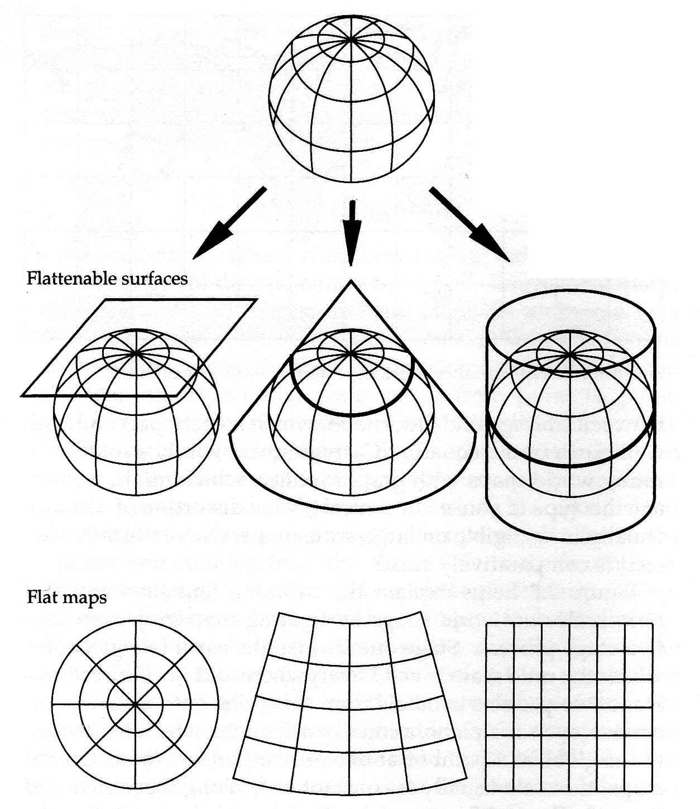
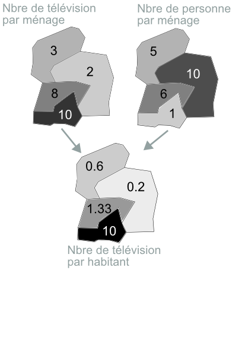
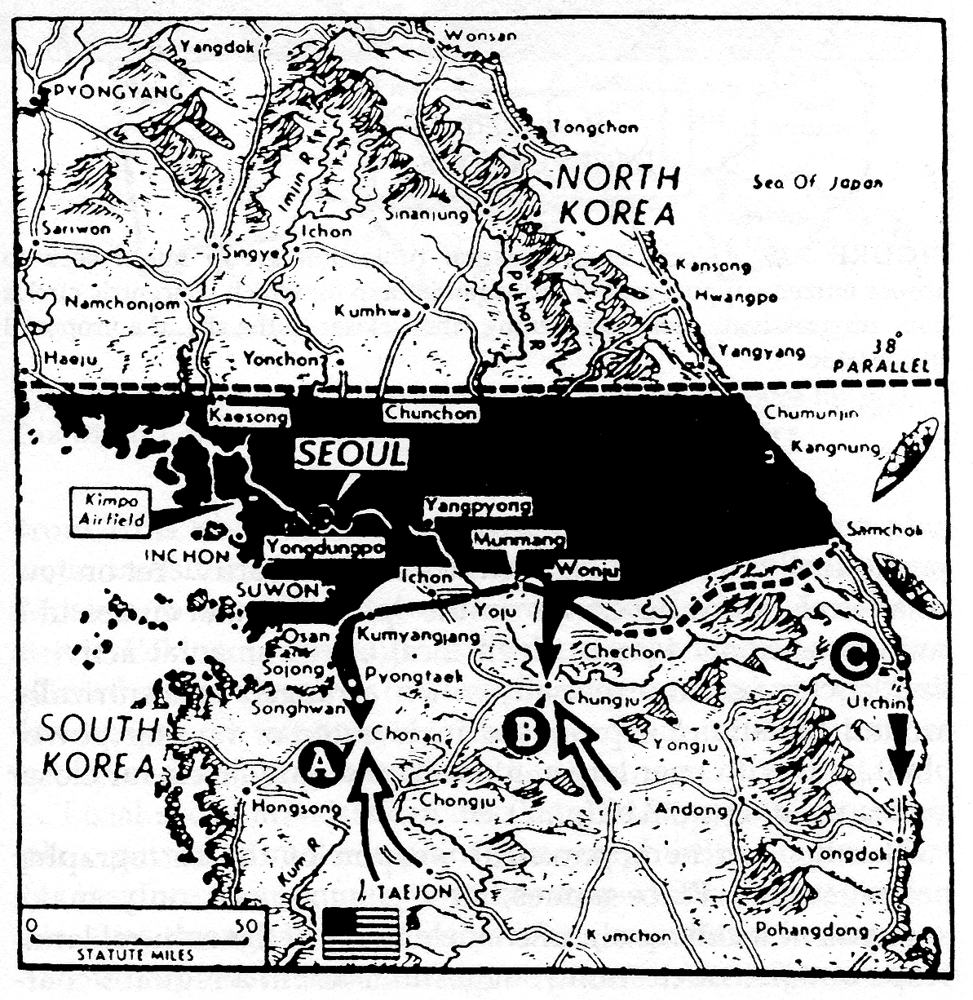
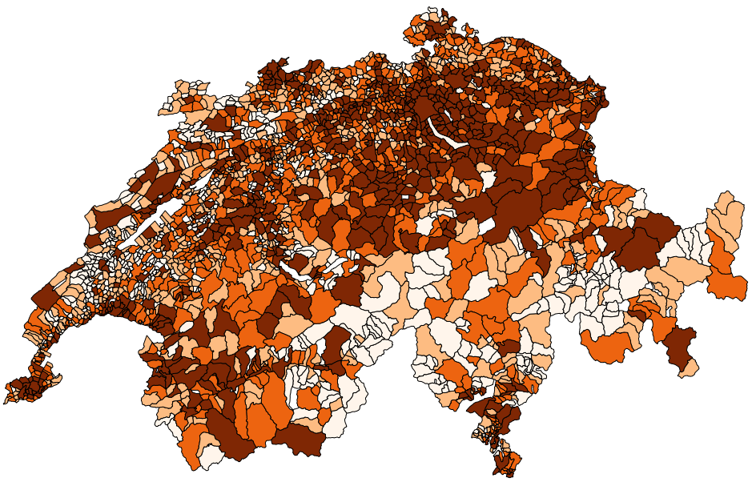
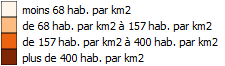

Comment mentir avec une carte?
TecDay@Beaulieu - 2014
Michael Kalbermatten
Moi...
Michael Kalbermatten
Où :
SITN - Systèmes d'Information du Territoire Neuchâtelois
Formation :
Ingénieur EPF en environnement, spécialisé en géomatique (2004)
Docteur ès Sciences (2010)
Pourquoi mentir avec une carte ?
et
comment mentir avec une carte ?
Présentation
- Notions de cartographie: échelle, projections, symbologie
- Généralisation cartographique
- Unité de mesure, comptage et statistiques
- Exemples
- QR
- Workshop
Notions de cartographie
Il y trois principales notions sur une carte :
- Une échelle
- Une projection
- Une symbologie
La modification d'une de ces notions a un impact (positif ou négatif...) sur la représentation cartographique.
Échelle
L'échelle d'une carte est donnée par le rapport entre une distance sur la carte et une distance sur le terrain :
- 1 : 200'000 1 mètre sur la carte = 200'000 mètres sur le terrain
- 1 : 2'000 1 mètre sur la carte = 2'000 mètres sur le terrain
Échelle
Plus le dénominateur (200'000 / 2'000 / ...) est grand, moins la carte est précise (carte à petite échelle)
Plus le dénominateur est petit, plus la carte est précise (carte à grande échelle)
Échelle

Échelle
Projection
En gros... Comment coller au mieux une feuille plate sur une sphère (la Terre...) en évitant les plis...
Ben... pas facile...
Projection
© Mark Monnier, How To Lie With Maps, 1996
Projection
© Mark Monnier, How To Lie With Maps, 1996
Symbologie
© Mark Monnier, How To Lie With Maps, 1996
Généralisation cartographique
Petits mensonges entre amis (ou pas...)
Généralisation cartographique
© Mark Monnier, How To Lie With Maps, 1996
Généralisation cartographique
© Mark Monnier, How To Lie With Maps, 1996
Unité de mesure, comptage et statistiques
Conclusion
Si l'on regroupe les trois composants cartographiques (échelle, projection et symboles) et la généralisation, il y a des millions de manières différentes de créer une carte.
Le mensonge n'en devient que plus facile
Mais comment différencier la sensibilité de chaque cartographe et le mensonge ??
Exemples
(ou comment apprendre à bien mentir)
Exemple 1 - projection
© Google maps, 2014
Exemple 1 - projection
©http://www.vox.com, 2014
Exemple 1 - projection
Exemple 2 - projection - Gall-Peters
© Mark Monnier, How To Lie With Maps, 1996
Exemple 2 - projection - Gall-Peters
© Mark Monnier, How To Lie With Maps, 1996
Exemple 3 - projection - Carte de transports
©Transport for London, 2014
Exemple 3 - projection - Carte de transports
Exemple 4 - Empire britannique
Exemple 5 - Conquête de l'Alaska
Exemple 6 - Propagande allemande 2ème guerre mondiale
© Mark Monnier, How To Lie With Maps, 1996
Exemple 7 - Trouve ma ville...
© Mark Monnier, How To Lie With Maps, 1996
Longitude : 31.9557181
Exemple 7 - Taux de mortalité !!!
© Mark Monnier, How To Lie With Maps, 1996
Exemple 8 - C'est à moi !!!
© Mark Monnier, How To Lie With Maps, 1996
Exemple 9 - C'est encore à moi !!!
Exemple 10 - La carte militaire
© Mark Monnier, How To Lie With Maps, 1996
Exemple 10 - La carte militaire
© Mark Monnier, How To Lie With Maps, 1996
Exemple 11 - La menace arabe
Exemple 12 - 3D (ouai... à d'autres...)
Exemple 12 - 3D (ouai... à d'autres...)
Exemple 12 - 3D (ouai... à d'autres...)
QR 1 - Cela ne sent pas bon...
QR 1 - Cela sent encore moins bon...
QR 1 - Cela sent encore moins bon...
QR 2 - Quoi, t'as pas la 3G ??
QR 3 - Sacré conservateurs ces britons...
QR 3 - Sacré conservateurs ces britons...
QR 4 - Il y en a des gens...
QR 4 - Il y en a des gens...
On prend:
- le max d'hab. Zürich (~380'000 hab.)
- le min d'hab. environ 0...
- (max-min) / 4 = ~ 95'000 hab.
QR 4 - Il y en a des gens...
QR 4 - Il y en a des gens...
On divise en quantile:
- le 25% des premières communes (en nombre) sera dans le premier groupe équivaut à max. 586 hab.
- le 50% des plus premières communes sera dans le deuxième groupe (moins le premier groupe...) équivaut à max. 1344 hab.
- le 75% des plus premières communes sera dans le troisième groupe (moins les deux premiers groupes...) équivaut à max. 3284 hab.
- le reste sera le quatrième (plus de 3284 hab.)
QR 4 - Il y en a des gens...
QR 5 - Alors, c'est quoi qui est faux ici ?
© National Geographic, 2014